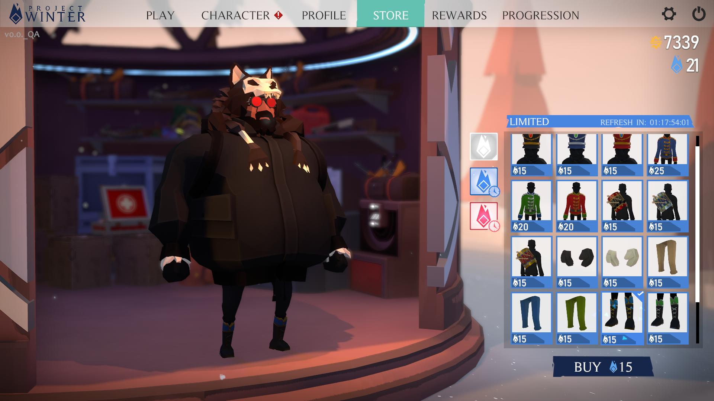
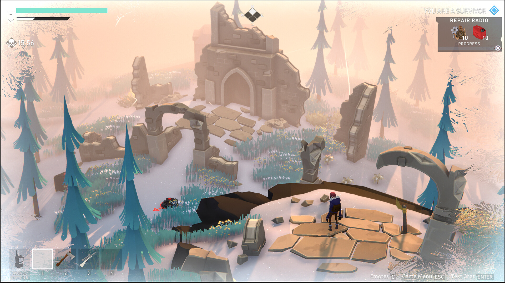
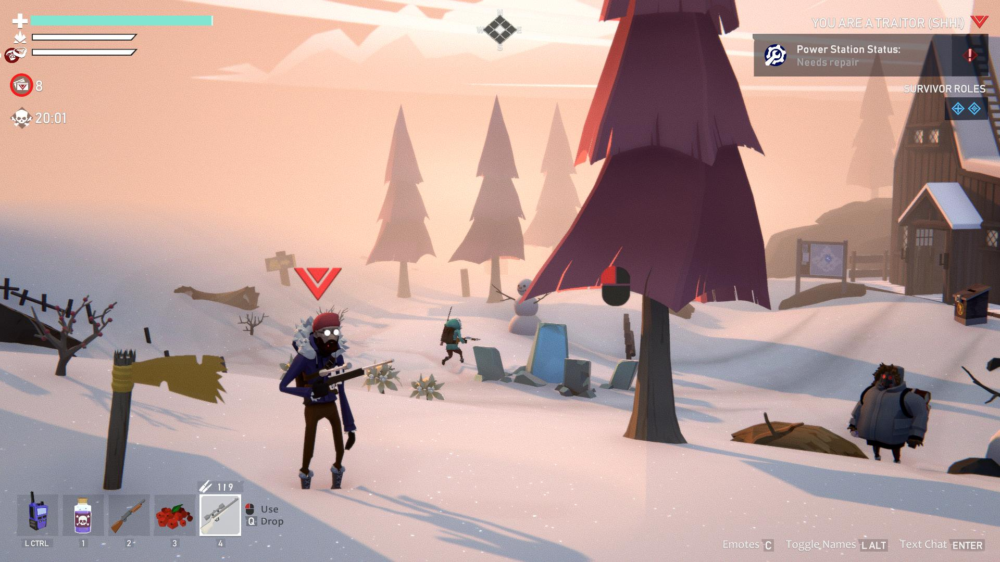

Project Winter
Multiplayer Social Deception Survival Game
Overview
Project Winter is an 8‑player social deception survival game where communication, teamwork, and betrayal shape every match. Players must gather resources, repair structures, and survive the elements—while traitors work from within to sabotage the group. The game blends cooperative survival with hidden‑role mechanics, creating unpredictable and highly replayable sessions.
My Role
Lead Programmer • Console Lead
- Lead programmer, coordinating the release of 5 platforms (Steam, Win10, Xbox, PlayStation, Nintendo Switch)
- Managed resource allocation, JIRA planning and staff reviews, working in collaboration with Production to meet sprint goals.
- Added gameplay features, new objectives, game mehanics and tooling.
- Reported to the Technical Director on status and progress of the title.
- Collaborated with design, production, and QA to deliver features under tight live‑service timelines.
Technical Deep Dive
I introduced multiple improvements to the game including backend services and porting the game to Nintendo Switch
- Designed and implemented a secure IAP system using PlayFab Economy V2 on all 5 platforms to sell in-game character cosmetics to the player base.
- Spearheaded BaaS within the company using PlayFab and created Azure Functions to store user data, add friends, send invites, secure purchases, authenticate and deploy to dev/stage/prod environments.
- Optimized performance across Unity, console hardware, and improved load times and install size.
- Constant iteration, improvements and maintenance of the code base
Gallery


